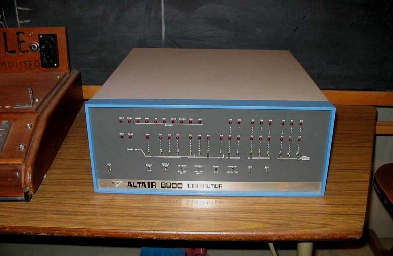

Tweet
Tweet
The prices of scanners and OCR software dropped, even if the power of OCR systems increased many times over the last, say, 30 years.
OCR solutions have become a “mainstream” application used on a wide base of installed scanners. Add two markets that have exploded the last twenty years: the digital cameras and “all-in-one” devices (a.k.a. “multifunctional peripherals” (“MFPs”)). (The latter machines combine several functions such as printing and scanning, or faxing, printing and scanning etc.)
The big breakthrough in popularity happened in the first years of the 21st century: scanner sales increased from 24.4 million units in 2000 to 47.8 million units in 2004, a growth rate of 18% per year. “All-in-one” devices had a growth rate of 40% per year between 2000 and 2004. Those growth figures have slowed down after 2004, mind you…
Ultimately, OCR solutions may become as popular as your word processor: as the word processor is the tool you need to produce and edit documents, your scanner and OCR software are what you need to recapture texts on paper without retyping.
Or you could look at it in another way and say that only a few players out of some 50 companies are left on the OCR market. The large majority of these companies is as dead as MITS and IMSAI, the pioneers of the PC revolution.

As only the strongest companies have survived, you might think that any OCR package currently available on the market will do. Well, not quite! As OCR power increases every year, it’s important to dispose of the latest technology. Don’t think too quickly that any older version you may have will do. When you compare the newest versions of recognition software with older versions that date back, say, 10 years, you can’t avoid the conclusion that the number of recognition errors has easily dropped by a factor 5 to 10. Each revision of a leading OCR engine improves the accuracy and widens the range of legible documents.
Any small amount of money your upgrade may cost is paid back very quickly as your productivity increases. Let’s say that the latest version of your OCR software makes 20% less errors than a previous version — a realistic figure. Just think of the gain in productivity this represents!
When it comes to OCR, the recognition engine is very much the key, and there’s no way around that.